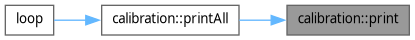
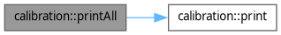

Lade ...
Suche ...
Keine Treffer
calibration-Namensbereichsreferenz
Funktionen | |
| void | print (const int pin) |
| Liest den aktuellen Sensorwert des analogen Pins 0 und gibt ihn über USB aus. Diese Funktion wird verwendet, um die Kalibrierungswerte für Luft und Wasser zu bestimmen. Die Funktion wartet 1000ms zwischen den Messungen. | |
| void | printAll () |
| Liest den aktuellen Sensorwert der analogen Pins 0 bis 3 und gibt ihn über USB aus. Diese Funktion wird verwendet, um die Kalibrierungswerte für Luft und Wasser zu bestimmen. Die Funktion wartet 1000ms zwischen den Messungen. | |
Dokumentation der Funktionen
◆ print()
| void calibration::print | ( | const int | pin | ) |
Liest den aktuellen Sensorwert des analogen Pins 0 und gibt ihn über USB aus. Diese Funktion wird verwendet, um die Kalibrierungswerte für Luft und Wasser zu bestimmen. Die Funktion wartet 1000ms zwischen den Messungen.
Definiert in Zeile 16 der Datei calibration.hpp.
Hier ist ein Graph der zeigt, wo diese Funktion aufgerufen wird:

◆ printAll()
| void calibration::printAll | ( | ) |
Liest den aktuellen Sensorwert der analogen Pins 0 bis 3 und gibt ihn über USB aus. Diese Funktion wird verwendet, um die Kalibrierungswerte für Luft und Wasser zu bestimmen. Die Funktion wartet 1000ms zwischen den Messungen.
Definiert in Zeile 29 der Datei calibration.hpp.
Hier ist ein Graph, der zeigt, was diese Funktion aufruft:

Hier ist ein Graph der zeigt, wo diese Funktion aufgerufen wird: